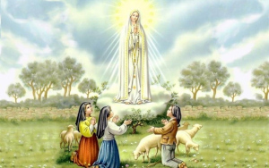
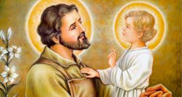
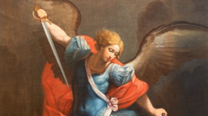

Olá, me chamo Juliano Alexandre, tenho 14 anos
irei fazer 15 anos em 05/07, Sou Católico
com muita felicidade, Sou Acólito da Capela São João Bosco
que fica em Várzea Grande-MT.
Ah, ela.. ela é minha mãezinha do céu,
ela quem cuida de mim junto de seu filho,
escolhi essa Nossa Senhora porque
foi ela quem apareceu em Fátima-Portugal
para os três pastorinhos e disse
para todos rezarem diariamente o Santo Terço,
por isso eu tenho essa Devoção especial por ela.

Meu Glorioso São José, meu companheiro
nas batalhas contra a castidade,
escolhi São José porque quero imitar como ele foi,
ele, um homem casto, puro, santo, minha inspiração...

E por fim, o meu Anjo protetor,
o guerreiro que sempre clamo em
momentos de perigo espiritual e físico,
meu primeiro Santo de Devoção
